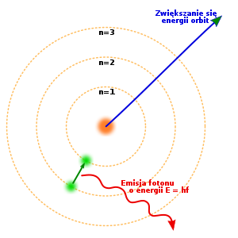

Niels Bohr - duński fizyk, urodzony 7 października 1885r. w Kopenhadze
w 1922r. zdobył nagrodę nabola w dziedzinie fizyki za badania struktury atomów oraz emitowanego przez nie promieniowania.
Jednym z jego badań był model budowy atomu Bohra
Według modelu Bohra elektrony poruszają się po orbitach(powłokach), tak jak Ziemia wokół Słońca Mogą one przechodzić z jednej powłoki na drugą czemu towarzyszy absorpcja lub emisja energii. Wartość energii dla elektronu zależy od odległości od jądra (im dalej tym jest większa). Energia elektronu może zmieniać się jedynie w sposób skokowy (skwantowany), co wiąże się z tym, że elektron musi pochłonąć ściśle określoną porcje energii. Stan o wyższej energii jest nietrwały i nosi on nazwę stanu wzbudzonego.
Wygląd modelu Bohra jest przedstawiony poniżej:
Gdzie: n = numer powłoki
